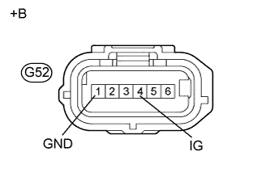

DTC C1232 Заедание в датчике ускорения |
DTC C1243 Заедание в датчике ускорения |
DTC C1245 Ненормальный выходной сигнал датчика ускорения |
DTC C1279 Недопустимое напряжение на выходе датчика ускорения (DTC режима активной диагностики) |
| Код DTC | Условие обнаружения DTC | Неисправный участок |
| C1232 | При скорости автомобиля 10 км/час (6 миль в час) или выше сигнал GL1 или GL2 (входной сигнал) не изменяется в течение 30 с или более. |
|
| C1243 | При изменении скорости автомобиля с 30 км/час (19 миль в час) до 0 км/час (0 миль в час) состояние, при котором сигналы GL1 и GL2 не изменяются на 0,0294 G или более, наблюдается не менее 16 раз. |
|
| C1245 | При скорости автомобиля 30 км/час (19 миль в час) или более различие между значением ускорения в прямом и обратном направлениях, рассчитанным по сигналу датчика ускорения, и значением, рассчитанным по сигналам скорости автомобиля, превышает 0,35 G в течение не менее 60 с. |
|
| C1279 | Сохраняется только в режиме активной диагностики. |
|
| 1.ПРОВЕРЬТЕ DTC |
Сбросьте коды DTC (Нажмите здесь).
Выключите зажигание.
Двигаясь на автомобиле со скоростью 30 км/час (19 миль в час) или выше, поверните рулевое колесо и замедлите движение (нажмите педаль тормоза).
Снова включите зажигание и убедитесь, что коды DTC для мультиплексной шины CAN не выводятся (Нажмите здесь).
Проверьте, не выводятся ли коды DTC для калибровки "нуля" датчика замедления и рысканья (C1210) или для калибровки "нуля" датчика замедления (C1336) (Нажмите здесь).
| Результат | Следующий шаг | |
| DTC выводится (связанный с датчиком замедления и рысканья) | А | |
| DTC выводится (связанный с мультиплексной шиной CAN) | для моделей с левосторонним рулевым управлением без системы посадки и запуска | B |
| DTC выводится (связанный с мультиплексной шиной CAN) | для моделей с правосторонним рулевым управлением без системы посадки и запуска | C |
| DTC (C1210 и/или C1336) выводятся | D | |
|
| ||||
|
| ||||
|
| ||||
| А | |
| 2.ПРОВЕРЬТЕ МОНТАЖ ДАТЧИКА ЗАМЕДЛЕНИЯ И РЫСКАНЬЯ |
Выключите зажигание.
Убедитесь, что датчик замедления и рысканья установлен правильно (Нажмите здесь).
|
| ||||
| OK | |
| 3.ПРОВЕРЬТЕ НАПРЯЖЕНИЕ НА КОНТАКТЕ (IG, GND) |
Отсоедините разъем G52 датчика замедления и рысканья.
|  |
Измерьте напряжение в соответствии со значениями, приведенными в таблице.
| Контакты для подключения диагностического прибора | Положение переключателя | Заданные условия |
| G52-4 (IG) - масса | Зажигание включено | 11-14 В |
Измерьте сопротивление в соответствии со значениями, приведенными в таблице ниже.
| Контакты для подключения диагностического прибора | Состояние | Заданные условия |
| G52-1 (GND) - масса | Всегда | Менее 1 Ом |
| *a | Вид спереди разъема со стороны жгута проводов: (к датчику замедления и рысканья) |
| Результат | Следующий шаг |
| OK (при поиске неисправностей в соответствии с таблицей диагностических кодов неисправностей) | А |
| ОК (при поиске неисправностей в соответствии с таблицей признаков неисправностей) | B |
| NG | C |
|
| ||||
|
| ||||
| А | ||
| ||